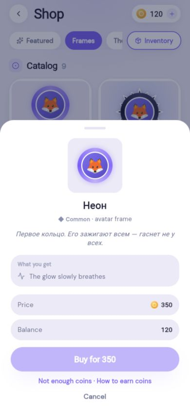
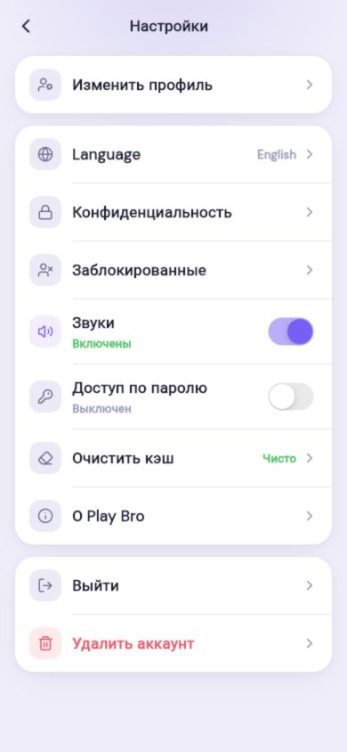

Комнаты и голос
Создать открытую или приватную комнату, позвать друзей и общаться во время игры.
Play Bro помогает собраться онлайн: открыть комнату, пригласить друзей, выбрать игру, следить за прогрессом и оставаться на связи.
Скриншоты ниже сделаны из приложения. Это не отрисовка и не макет отдельного сайта.


Создать открытую или приватную комнату, позвать друзей и общаться во время игры.
Добавлять игроков, видеть взаимные связи и отправлять игровые приглашения.
Выбирать режим, играть вместе и возвращаться за прогрессом, историей и реваншем.
Делиться активностью, видеть события друзей, управлять своим профилем и приватностью.
Комнаты, друзья, каталог игр, профиль, лента, комментарии, XP, монеты, достижения, история матчей, настройки и инструменты безопасности. Доступ к мобильной beta-сборке выдаётся через TestFlight по приглашению.
В репозитории собраны описание, реальные экраны приложения и презентация. Исходный код, инфраструктура и пользовательские данные не публикуются.
Открыть GitHub-репозиторий